UML 图例：空心三角指向父类；实心菱形表示组合；空心菱形表示聚合或共享；实线箭头表示引用，虚线箭头表示使用。
1.1 模型外层的继承
nn.ModulePyTorch 模块基类，管理子模块、参数和 forward 调用
Qwen3VLForConditionalGeneration组织输入 Embedding、文本模型与 logits
Qwen3_5ForConditionalGeneration选用 Qwen3.5 文本模型，复用父类 forward
1.2 文本模型与 Decoder 层的继承
Qwen3_5ForCausalLMEmbedding → 逐层计算 → 最终归一化
Qwen3_5AttentionDecoderLayer全注意力层，包含注意力与前馈网络(FFN)
Qwen3_5LinearDecoderLayer线性注意力层，包含 GDN 与 FFN
Qwen3_5GatedDeltaNet组织投影、线性注意力、门控与输出投影
Qwen2MoeMLP本链路的稠密 FFN，计算 gate/up → 激活 → down
ModuleList注册并保存各个 Decoder 层的容器
1.3 注意力入口与输出模块的继承
RadixAttention全注意力入口，调用当前注意力后端
RadixLinearAttention线性注意力入口，传入 QKV 与门控参数
LogitsProcessor选取 hidden_states，用 lm_head 权重计算词表分数
Sampler从词表分数或概率中选择下一个 token
2. 线性投影与词表权重
LinearBase保存输入/输出维度、dtype，并选择 quant_method
ColumnParallelLinear按输出维度切分权重，执行本卡线性计算
QKVParallelLinear处理 Q/K/V 头数、切片及对应权重加载
MergedColumnParallelLinear合并多组投影，如 gate/up
RowParallelLinear按输入维度切分权重，按配置归约局部结果
VocabParallelEmbedding按 token ID 查词表权重，支持词表切分
ParallelLMHead复用词表分片与权重管理，提供输出词表权重
3. 普通与量化计算的方法接口
abc.ABC抽象基类(Abstract Base Class)
QuantizeMethodBase定义创建权重、应用权重及加载后处理接口
UnquantizedEmbeddingMethod创建词表权重；embedding 调用 F.embedding
LinearMethodBase线性层计算方法的公共接口
UnquantizedLinearMethod普通线性计算，通用分支为 F.linear
4. 归一化、激活与位置编码
GemmaRMSNorm均方根归一化(RMSNorm)，缩放项为 1 + weight
SiluAndMul计算 SiLU(gate) × up
RotaryEmbedding旋转位置编码(RoPE)
MRotaryEmbedding支持多维位置编码(MRoPE)
RMSNorm (RMSNormGated)来自 fla/layernorm_gated.py；归一化并应用 z 门控。
5. 推理执行器
ModelRunner持有模型、执行器、注意力后端、缓存池与采样器
BaseRunner统一执行器接口，并保存 model_runner 引用
EagerRunner即时执行(Eager)，直接调用模型前向
TpModelWorker持有 ModelRunner，组织前向执行与采样
6. 注意力后端与 GDN 内核
AttentionBackend定义元数据初始化及 Prefill / Decode 等接口
FlashAttentionBackend组织全注意力元数据、K/V 读写与注意力内核
HybridLinearAttnBackend按层类型分发到全注意力或线性注意力后端
MambaAttnBackendBase线性注意力状态槽位及元数据的公共逻辑
GDNAttnBackendGated Delta Network 后端，组织卷积、门控和状态更新
LinearAttnKernelBase线性注意力计算内核的公共接口
TritonGDNKernelGDN 的 Triton 内核实现
GDNKernelDispatcher按 Prefill / Decode 模式选择具体内核对象
7. 请求映射、KV 缓存与线性注意力状态
MHATokenToKVPool在 GPU 显存中保存并读写全注意力层的 K/V
HybridLinearKVPool组合全注意力与线性状态池，并映射模型层号
ReqToTokenPool请求槽位(req slot) → token 的 KV 编号(KV index)
HybridReqToTokenPool增加线性状态槽位映射，并持有 MambaPool
MambaPool在 GPU 显存中保存短卷积状态和递推状态
8. 本轮批次、残差与结果对象
ForwardContext保存本次 forward 使用的注意力后端引用
ForwardBatchDeepSeekMHAMixinForwardBatch 的批次扩展基类
ForwardBatch本轮 token、请求槽位、长度、写入位置及残差流
StageBoundary注意力/FFN 的阶段边界，处理输入准备、残差和归一化
FfnExit保存本轮 FFN 的退出处理，完成输出与残差流的衔接
ResidualStream保存一次 forward 的残差及待处理输出
KVWriteLoc封装本轮 KV 写入位置，按层解析具体位置
ModelRunnerOutput封装模型前向结果及执行信息
LogitsProcessorOutput保存 next_token_logits 和可选 logprob 等输出
9.1 模型工作进程与 ModelRunner
TpModelWorker 通过 model_runner 属性访问 _model_runner。
9.2 ModelRunner 持有的对象
EagerRunner.model_runner 引回同一个 ModelRunner。空心菱形表示它持有的共享对象。
10. Qwen3.5 模型内部的组合
ModuleList 按层配置保存全注意力层或线性注意力层；这里列出纯文本生成使用的成员。lm_head 使用独立的词表输出权重。
11. 全注意力层的组合
归一化成员：q_norm、k_norm、input_layernorm、post_attention_layernorm。阶段边界：attn_boundary、ffn_boundary。rotary_emb 由 get_rope 按配置选择，也可以是 MRotaryEmbedding。
12. 线性注意力层的组合
归一化成员：input_layernorm、post_attention_layernorm。阶段边界：attn_boundary、ffn_boundary。
13. Gated DeltaNet 内部的组合
输入投影成员：in_proj_qkvz、in_proj_ba。conv1d 提供短卷积权重；RadixLinearAttention 引用该权重及 A_log、dt_bias 门控参数。
14. FFN 与普通线性计算策略
未量化配置下，线性层通过 quant_method.apply(layer, x, bias) 使用层上的 weight；Embedding 通过 embedding() 查权重表。
15. 混合注意力后端与内核对象
本例的 Prefill 和 Decode 都使用 Triton，两个成员引用同一个 TritonGDNKernel。
16. 当前注意力后端的引用
ModelRunner._forward_raw() 为本轮设置 ForwardContext。Radix 层读取上下文中的后端，再调用其 forward；后端是共享对象。
17.1 缓存池与共享状态池
两个混合缓存池引用同一 MambaPool。MHATokenToKVPool.k_buffer/v_buffer 保存全注意力 K/V；MambaPool.mamba_cache.conv/temporal 保存卷积和递推状态，均位于 GPU 显存(GPU memory)。
17.2 注意力后端共享缓存池
对应成员是 req_to_token_pool 和 token_to_kv_pool；两个后端引用 ModelRunner 持有的同一组缓存池。
18.1 批次与残差流
ForwardBatch 保存 input_ids、positions、req_pool_indices、seq_lens、out_cache_loc。ResidualStream 保存 residual 和 pending。
18.2 结果对象与采样器
LogitsProcessorOutput.next_token_logits 是词表分数；Sampler 从分数或概率中选择下一个 token。